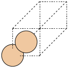
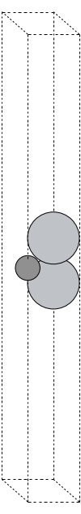
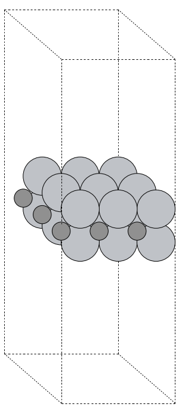
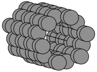

ASE - The Atomic Simulation Environment#
The Atomic Simulation Environment (ASE) is an open-source set of tools and Python modules for setting up, manipulating, running, visualizing and analyzing atomistic simulations. ASE can help you molecules and crystals, and then simulate them at different levels of theory (density functional theory, molecular dynamics, etc.). ASE can interface with a variety of simulation software platforms including VASP, Quantum ESPRESSO, Q-Chem, Gaussian, and others (see the full list) through tools called calculators. ASE can create input files, launch simulations, and parse the output.
ase has a vast set of modules and functions, giving it vast and powerful functionality. We will only scratch the surface in this brief introduction to ase.
Installation#
To use ASE, you must first install the ase Python module. You may use a command such as pip3 install ase to do this.
Usage#
To simulate a material or molecule in ASE, the workflow is typically as follows:
Build an ASE
Atomsobject to represent your molecule or materialUse an ASE
calculatorobject to perform a simulation and parse/visualize the results.
Note
Performing atomistic simulations are beyond the scope of this discussion. We will show you how to create an Atoms object. More information about performing simulations using Atoms objects and calculator objects may be found on the ASE documentation page Atoms and Calculators.
ase.Atoms Objects#
In ase, we use an Atoms object for an atomistic description of a material system. An Atoms object is actually a collection of Atom objects, each of which describes an atom, with member data such as symbol (string), position (a 3-element tuple of Cartesian coordinates, in Angstroms). Other atomic properties could be specified, such as mass, charge, etc.
Building Simple Molecules#
Python code that uses ase must include an import statement that imports the ase tools (functions or classes) you want to use. Here, we will:
use the
ase.build.molecule()function to construct a water molecule, andmake a representation of the molecule using the
ase.visualize.view()
The molecule() function is provided as a simple way to build an Atoms object. Here, a molecule is specified using a Python string containing a chemical formula, and only a very limited set of molecules are supported. The list of available molecules is found in the ase.collections.g2.names list:
Let’s do this again for a formic acid molecule. Additionally, we will also print the x, y, and z coordinates of each atom.
We can still make an interactive, 3D visualization:
Having constructed an ase.Atoms object to represent water molecule, we could create a calculator object to run a simulation.
Building Complex molecules#
If you want to go beyond the simple molecules ASE can create using the moleucles() function, you may use other strategies:
Construct a molecule from a structure file (
*.cif,*.xyz, etc.)Read the structure from simulation output
Obtain a structure from a molecular database
To read a structure from a file, use the read() function from the ase.io module. This module allows ASE to read from and write to files containing information about materials (documentation).
Building Simple Crystals - Bulk Silicon#
We will start with a simple (bulk) silicon crystal using the bulk() function in the ase.build module.
The static image of the silicon crystal (the two-atom basis for the FCC crystal) is given below.

We can also make an interactive 3D image:
Building a 2D System - a MXene#
The ase.build module provides functions for building 2D structures. For example:
graphene_nanoribbon()may be used to make graphene nanoribbons and graphene sheets.mx2()may be used to build MXene and transition metal dichalcogenide (TMD) monolayers.
Here, we will make a MXene.
As static image of the unit cell is given below. Since a structure like this would likely be used in a DFT calculation, and DFT calculations often have periodic boundary conditions, the unit cell features a large air gap to keep separate the main sheet from its images in the z direction.

Now, we form a supercell by repeating the unit cell in space. To repeat the primtive cell, described by the Ti2C object, we simply multiply Ti2C by a 3-element tuple. The three integers (nx, ny, nz) repeat the unit cell in the x, y, and z directions, respectively.
Additionally, the static image of the sheet is given below:

Building a 1D System - a Carbon Nanotube#
A next example will be a carbon nanotube. ASE has functionality to build such structures in the nanotube() function.
The static image of the nanotube is given below.

An interactive 3D image of the carbon nanotube is shown below.
Building Complex Crystals#
The structures the ase.build module allows you to construct are fairly basic. For more advanced structures, we may follow the same strategies as for the complex molecules:
Construct a crystal structure from a structure file (
*.cif,*.xyz, etc.)Read the structure from simulation output
Obtain a structure from a materials database
To read a structure from a file, use the read() function from the ase.io module. This module allows ASE to read from and write to files containing information about materials (documentation).